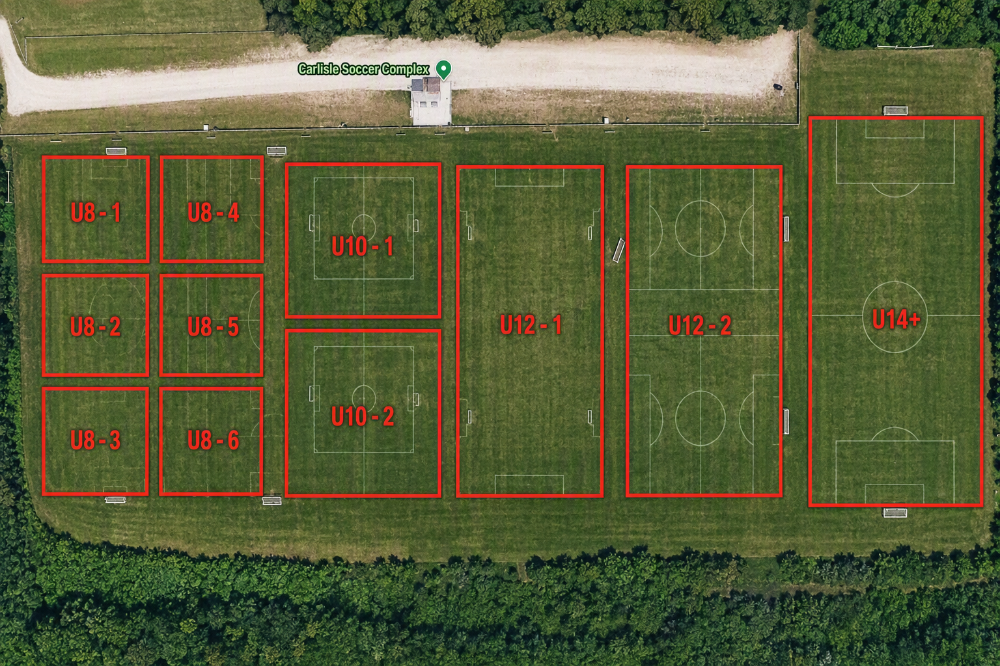

Fields & Directions
Where we play, how to get there, and what to know when you arrive.
Home fields
Carlisle Soccer Club hosts recreational matches and most practices at our home complex in Carlisle. Field numbers are posted at the entrance and included in your PlayMetrics schedule.
Home field layout

Finding your field
- Check PlayMetrics for your field number and kickoff time.
- Arrive 20–30 minutes early — parking fills quickly on busy Saturdays.
- Field numbers are marked with signs at each corner of the complex.
- Spectators sit opposite the team benches.
Parking
- Use marked lots only; do not park on grass or in fire lanes.
- Keep the main drive clear for emergency vehicles.
- Carpool when you can — peak Saturdays are tight.
Facility rules
- Tobacco, vape, and alcohol free at all club facilities.
- No pets during games and practices.
- No dogs, drones, or motorized vehicles on the fields.
- Pack out your trash and recycling.
Away matches
Away matches are played at other Rec Central club facilities across central Iowa. Addresses and directions are attached to each match in PlayMetrics. Allow extra travel time for unfamiliar complexes.
Weather & field closures
Fields close for lightning, heavy rain, or unsafe conditions. Closures are announced through PlayMetrics and our Facebook page. Never play on a closed field — it damages the surface for the rest of the season.